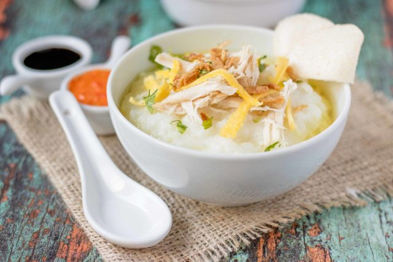

Home
Bubur Ayam Recipe

A delicious Indonesian chicken congee
Bubur Ayam is a comforting Indonesian chicken congee, often enjoyed as a breakfast dish or light meal.
Ingredient
For the Congee:
- 1 cup jasmine rice (or rice of your choice)
- 6 cups chicken broth (or water)
- 1/2 teaspoon salt
- 1/2 teaspoon pepper
- 2-3 green onions, sliced (for garnish)
- Fried shallots (for garnish)
- Soy sauce or sweet soy sauce (kecap manis) for serving
For the Chicken:
- 2 chicken thighs (or breasts)
- 2 cloves garlic, minced
- 1 tablespoon ginger, minced
- 1 tablespoon soy sauce
- 1 tablespoon vegetable oil
- Salt and pepper to taste
Steps
- Prepare the Chicken:
- In a pot, heat oil over medium heat. Add garlic and ginger, and sauté until fragrant.
- Add the chicken, soy sauce, salt, and pepper. Cook until the chicken is browned.
- Add enough water to cover the chicken. Simmer until cooked through (about 15-20 minutes). Remove the chicken, shred it, and set aside. Reserve the broth.
- Make the Congee:
- Rinse the rice under cold water. In a large pot, combine the rice and chicken broth (or water).
- Bring to a boil, then reduce the heat to low. Simmer, stirring occasionally, for about 30-40 minutes, or until the rice is soft and the mixture is creamy. Add salt and pepper to taste.Bring to a boil, then reduce the heat to low. Simmer, stirring occasionally, for about 30-40 minutes, or until the rice is soft and the mixture is creamy. Add salt and pepper to taste.
- Serve:
- Ladle the congee into bowls. Top with shredded chicken, green onions, fried shallots, and any other desired toppings.
- Drizzle with soy sauce or sweet soy sauce.
Enjoy your warm and comforting Bubur Ayam!